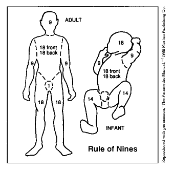

TR Knowledgebase: Rule of Nines

You can estimate the body surface area on an adult that has been burned by using multiples of 9.
In an adult who has been burned, the percent of the body involved can be calculated as follows:
- Head = 9%
- Chest and abdomen = 18%
- Upper/mid/low back and buttocks = 18%
- Each arm = 9%
- Groin = 1%
- Each leg = 18%
As an example, if both legs (18% x 2 = 36%), the groin (1%), and the chest and abdomen (18%) were burned, this would involve 55% of the body.
Use the Rule of Nines to estimate the approximate size of the burn as this form of information is useful to responders.
Copyright © 2004, PowerPhone Inc.